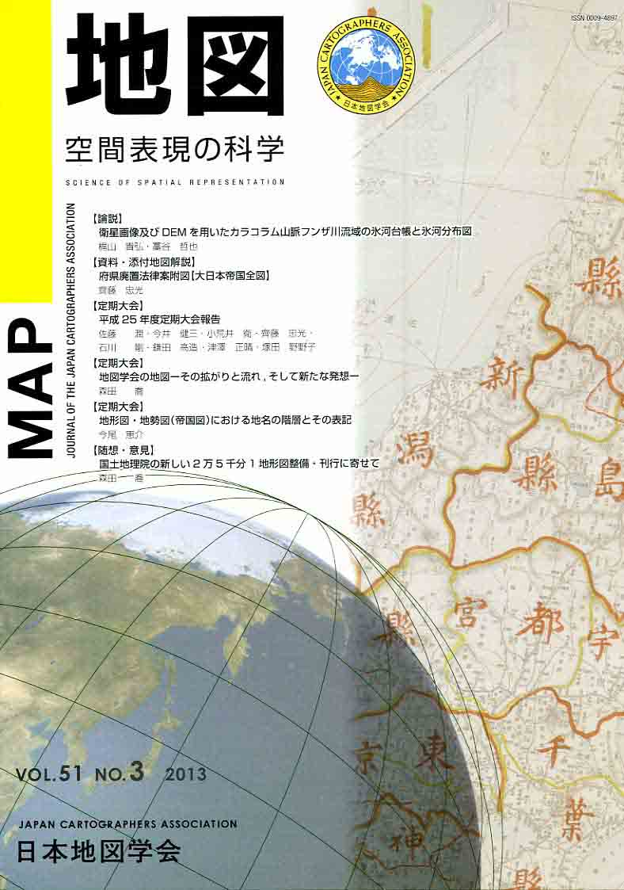
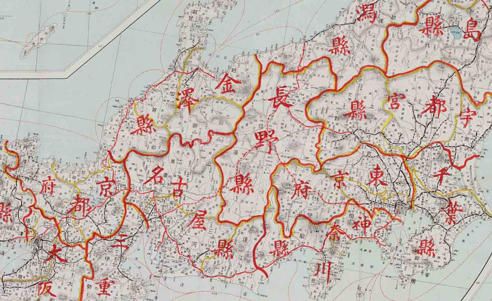

| 最 新 号 | バックナンバー | 添付地図目録 | 投 稿 規 程 |
Vol.51 No.３ （通巻２０３号） ２０１３年
| 【論説】 | 衛星画像及びDEMを用いたカラコルム山脈フンザ川流域の氷河台帳と氷河分布図 | 梶山貴弘・藁谷哲也 |
| キーワード：氷河台帳、氷河分布、氷河の形態、衛星画像、カラコルム山脈 | ||
| 【資料・添付地図解説】 | 府県廃置法律案附図【大日本帝国全図】 | 齊藤忠光 |
| キーワード：府県合併、府県廃藩法律案、大日本帝国全図、広域地方行政区域図 | ||
| 【定期大会】 | 平成25年度定期大会報告 | 佐藤 潤・今井健三・小荒井衛・齊藤忠光・石川 剛・鎌田高造・津澤正晴・塚田野野子 |
| 【定期大会】 | 地図学会の地図−その拡がりと流れ，そして新たな発想− | 森田 喬 |
| 【定期大会】 | 地形図・地勢図（帝国図）における地名の階層とその表記 | 今尾恵介 |
| 【随想・意見】 | 国土地理院の新しい2万5千分1地形図整備・刊行に寄せて | 森田 喬 |
| 【特別会員名簿】 | ||
| 【リレーメッセージ】 | 地図から受けた恩恵 | 式 正英 |
| 【学会記事】 | ||
| 【漆付地図】 | 府県廃置法律案附図【大日本帝国全図】 | |
|
≪No.51 No.3 表紙≫ |
|
|  |
|
|
|
≪No.51 No.3 添付地図≫ |
|
 本添付地図は、国立公文書館デジタルアーカイブで公開されています。 ・大日本府県全図 府県配置法律案付図 http://www.digital.archives.go.jp/gallery/view/detail/detailArchives/0000001948 本図を許可なく複製・利用することを禁止します。
|